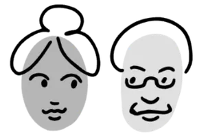
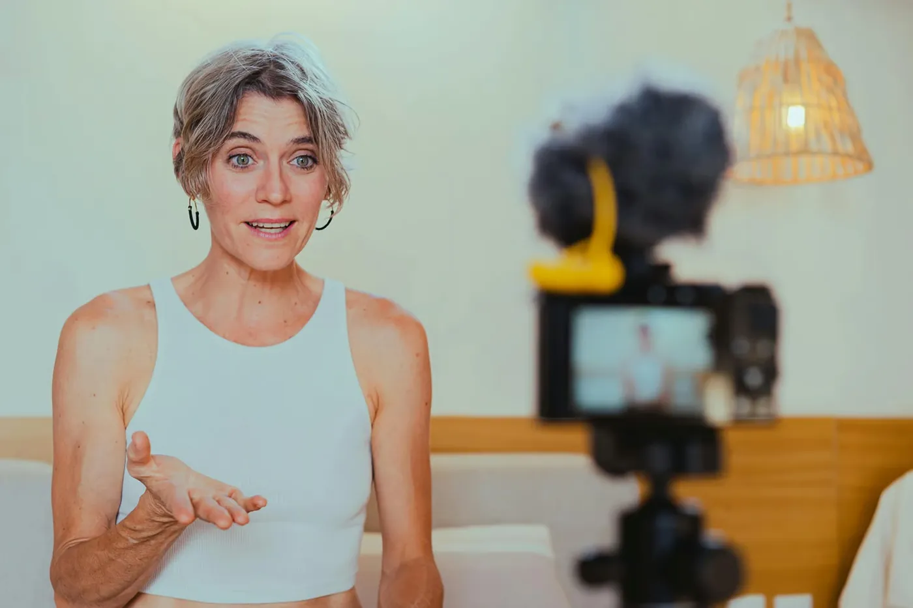
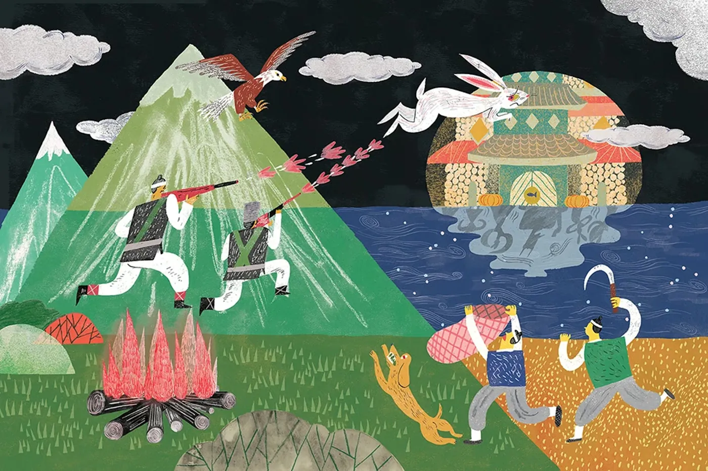

나이는 숫자에 불과합니다.
노는창작자 프로젝트는 시니어들이 그동안의 지식과 경험, 창의력을 바탕으로 새로운 도전에 나설 수 있도록 돕고 있습니다. 함께 배우고 소통하며, 지역사회와 다음 세대에 오래 남을 의미 있는 발자취를 남겨보세요.

노는창작자에 오신 걸 환영합니다!
저희는 시니어들이 자신의 창의성을 의미 있는 활동에 활용할 수 있도록 돕는 단체입니다.
콘텐츠 제작을 통해 시니어들이 자신의 경험, 문화적 유산, 그리고 전문적인 기술을 세상과 나누도록 장려하고 지원합니다. 또한 시니어만의 고유한 스토리텔링과 소통 방식을 현대적인 소셜미디어 플랫폼과 결합하여 더 많은 사람들과 연결될 수 있도록 돕습니다.
더 알아보기통계
시니어와 미디어, 숫자로 살펴보기
65세 이상 미국인의 24%가 사회적 고립을 경험하고 있습니다.
전체 유튜브 사용자 중 19%는 55세 이상입니다.
노년층의 약 70~80%가 유튜브를 정기적으로 이용하고 있습니다.
시니어 크리에이터
자신만의 이야기로 세상과 만나는 분들
추천 교육자료
처음이어도 천천히 따라 할 수 있어요
자주 묻는 질문
질문을 누르면 답이 펼쳐집니다.
찾는 답이 없나요? 문의하기
소개
이야기와 기술, 지역사회를 잇는 시니어 창작 프로젝트
노는창작자는
'노는 크리에이터' 프로젝트는 이야기와 기술, 지역사회를 연결해 시니어들의 문화유산 전달과 창작 활동을 지원하는 특별한 프로그램입니다. 전래동화를 바탕으로 시니어들이 자신의 경험과 지혜를 담아내고, 새로운 방식으로 세상과 소통할 수 있도록 돕습니다.

이런 일을 합니다
- 문화유산 전파
시니어들이 전통 전래동화를 현대적이고 흥미로운 형식으로 제작하고 공유할 수 있도록 지원합니다.
- 시니어 이야기꾼 양성
디지털 도구와 소셜미디어를 활용해 이야기 영상을 제작할 수 있는 기술을 교육합니다.
- 세대 간 협력
유치원과 지역 단체와의 파트너십을 통해 시니어와 어린 세대가 함께 교류하고 협업할 수 있는 기회를 제공합니다.
우리의 목표
노는창작자의 목표는 시니어들이 자신의 삶과 지혜를 이야기로 풀어내고, 이를 디지털 기술을 통해 세상과 연결하는 것입니다.
전래동화를 바탕으로 한 영상 콘텐츠 제작을 통해 잊혀가는 문화유산을 새롭게 조명하고, 지역 행사와 커뮤니티에서 당당히 자신만의 이야기를 들려줄 수 있도록 돕습니다. 또한 스마트폰, 영상 편집, SNS 등 실생활에 유용한 디지털 역량을 함께 키우며, 단순한 교육을 넘어 삶의 자신감과 창작의 즐거움을 되찾는 여정을 만들어 갑니다.
멤버
활동
영상, 동화책, 현장 기록으로 만나는 노는창작자
동화책
노(老)는 창작자 시니어 동화책 출간 안내
노(老)는 창작자는 어르신을 대상으로 미디어 활용 교육을 제공하고, 디지털 환경에서 자기 표현과 크리에이터 활동의 기회를 넓히는 프로젝트입니다. 고령화 시대에 어르신들이 자신의 이야기와 경험을 콘텐츠로 나눌 수 있도록 돕기 위해 시작되었습니다.
이번에 출간된 동화책에는 혹부리 영감, 거울을 처음 본 사람들, 우애 깊은 형제 등 우리 전통 전래동화를 수록했습니다. 할아버지, 할머니가 손주에게 이야기를 들려주듯 짧고 편안하게 읽을 수 있는 구성으로 만들었으며, 전통과 이야기 구조에 대한 주석도 함께 담았습니다.
앞으로 이 동화책을 바탕으로 어르신들이 제작한 콘텐츠를 Instagram, YouTube 등 소셜미디어에 공유하고, 지역 유치원과 협력한 교육 프로그램으로 확장해 나갈 예정입니다. 많은 관심과 응원 부탁드립니다.
동화책 보기게시물
현장 활동 사진
행사
요양원 방문, 전시회 등 노는창작자가 함께한 자리
교육자료
스마트폰 기초부터 유튜브 시작까지, 천천히 따라 할 수 있는 강좌
검색 결과가 없습니다. 다른 낱말로 찾아보세요.
게임
단어, 기억력, 짝 맞추기로 즐겁게 두뇌 운동을 해보세요.
짝 맞추기
같은 낱말 카드 두 장을 찾아보세요.
아래에서 바로 하기단어 게임
주어진 글자로 낱말을 만들어 보세요.
준비 중기억력 게임
순서를 기억하고 똑같이 따라 해보세요.
준비 중전래동화 짝 맞추기
카드를 눌러 뒤집고, 같은 낱말 두 장을 찾으세요.
모두 찾았어요! 훌륭합니다.
시니어 인플루언서 신청
경험이 없어도 괜찮습니다. 아래 내용을 보내주시면 담당자가 직접 연락드립니다.
봉사 신청
어르신의 첫 영상, 첫 그림을 곁에서 도와줄 봉사자를 찾습니다.
문의
프로그램 참여, 기관 협력, 후원 등 무엇이든 편하게 물어보세요.